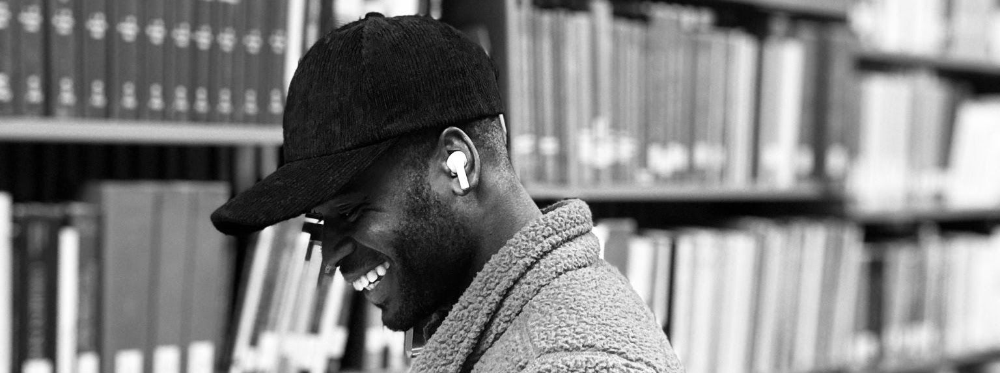

Linguist & educator
I am a third-year PhD student of linguistics at the Department of Linguistics, University of Wisconsin, Milwaukee, learning about and researching issues in Phonology, Second language linguistics, and, more recently, psycholinguistics. I also enjoy looking into Kwa syntax and Semantics. My advisor is Professor Anne Pycha.
Prior to UWM, I studied at the University of Education, Winneba, Ghana, where I completed my MPhil and BA in Applied Linguistics and English Language Education, respectively. I also hold a certificate in education from the Europa Universität Flensburg, Germany. I am a language researcher and ESL educator with about 5 years of experience spanning all levels of education. Find my CV here.
I am a member of the UWM linguistics Phonology lab and a co-organizer of the Phonetics & Phonology Reading Group (P-Group) at the Department of Linguistics, UWM.
You can find more about my research here. Feel free to contact and connect with me via email.
Beyond the lab
I am the last of five children, born and raised in Ghana to Ghanaian parents. I am a highly self-motivated individual with a passion for youth literacy mentorship, particularly the economic and social development of young adults. My foundation, The EAG Foundation (TelF), aims to contribute to such needs.
I am also a creative enthusiast with experience in brand advertising and advising, voice-over, creative writing, script writing, and event hosting. I also worked as a news anchor, reporter, and editor.
I enjoy photography, nature walks, biking, fitness, cooking, singing, watching movies, and traveling.
Languages
- Proficient
- Native Akan, English
- Beginner, Intermediate–Advanced
- Hausa, German
- Research
- Ewe, Awutu
